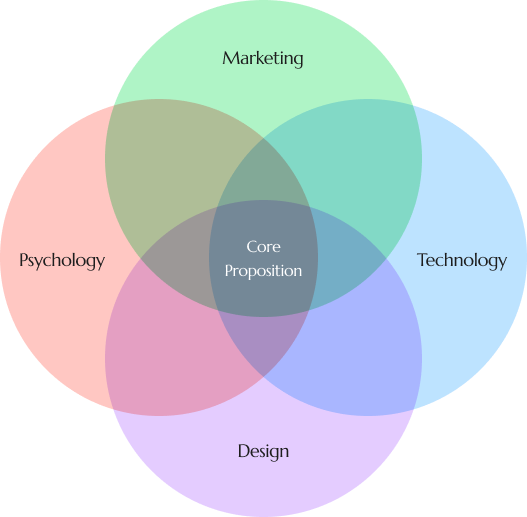
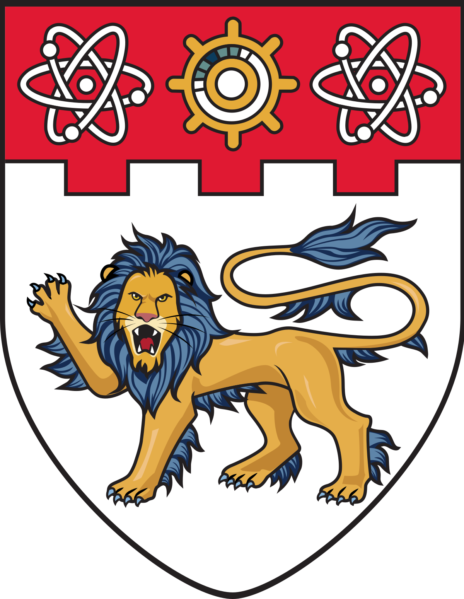
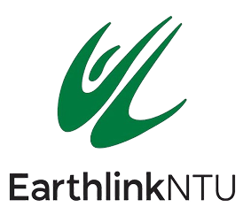
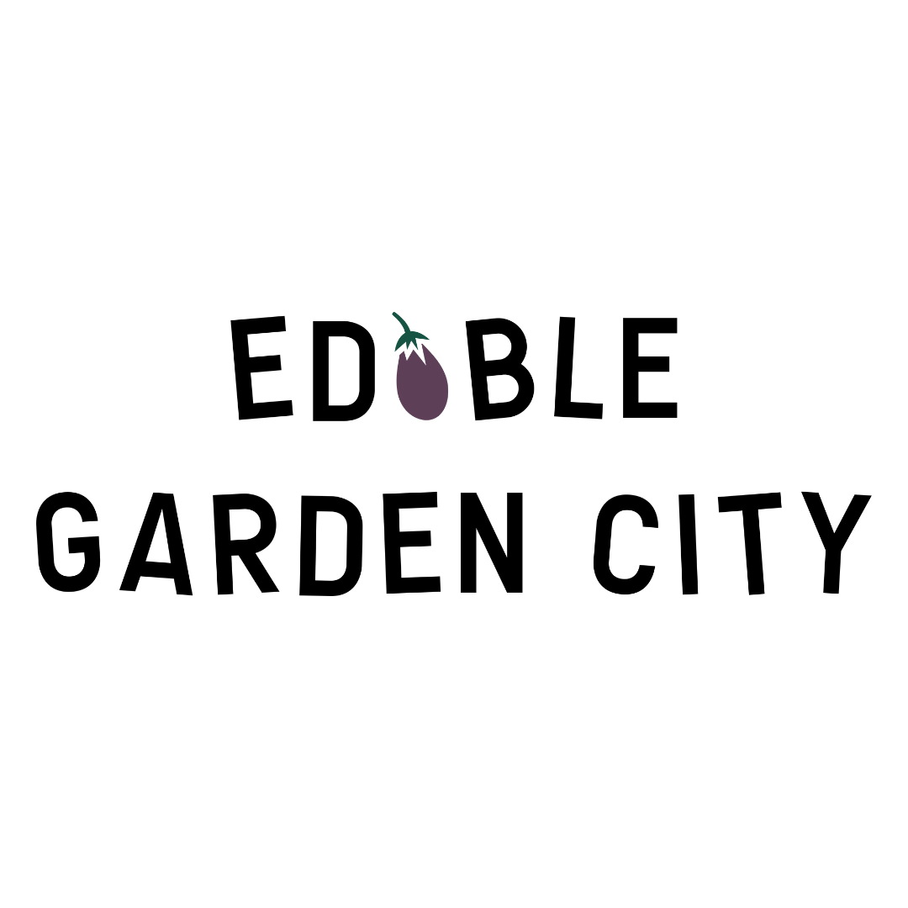
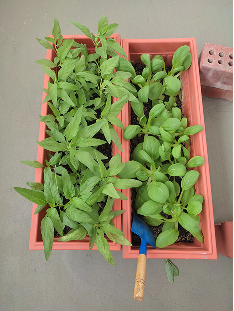
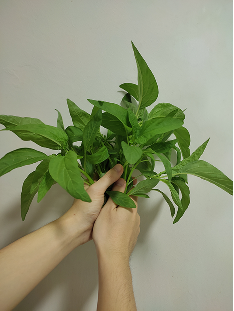
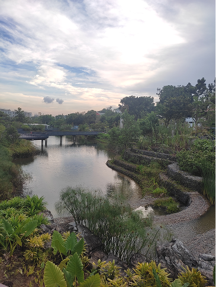

About
I see great ideas as seeds—when nurtured, they grow into something meaningful that serves people and the planet. My role, then, is not just to execute but to be the gardener: cultivating these ideas by building the systems that lead to sustainable outcomes.
To do this, I approach challenges with curiosity and a collaborative, systems-oriented mindset. I draw on my cross-disciplinary background in marketing, psychology, design, and technology to bring clarity to complex problems.
Ultimately, I help mission-driven businesses bring thoughtful initiatives to life by bridging the digital and physical worlds with purpose.

Experiences
Education
-

Nanyang Technological University
Bachelor of Business (Honours), Marketing
2021-2024
Professional
-
Evonik (SEA) Pte Ltd.
HR Intern (Compensation & Benefits)
2022 -

Earthlink NTU
Events Executive (Gardening)
2022-2023 -
DFS Venture Singapore Pte Ltd.
Systems Intern (HR)
2023 -

Edible Garden City Pte Ltd.
Marketing Executive
2025-Present
Interests
Beyond work, I find inspiration in nature, often immersing myself in edible gardening and the outdoors to fuel fresh ideas!


